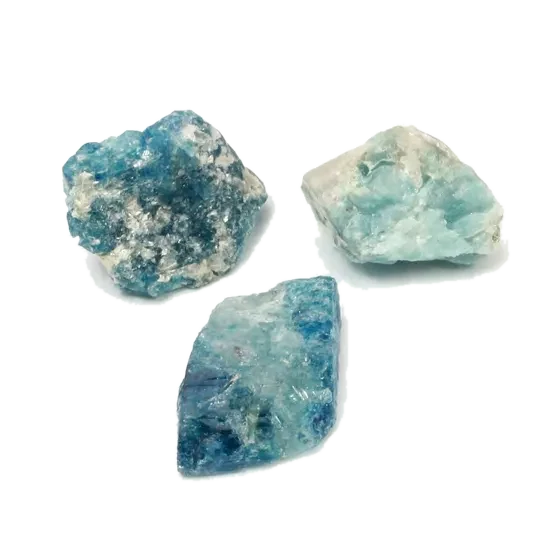

Mineral Grimoire
 Blue Euclase
Blue Euclase
Appearance
Blue. Transparent, veined crystal. Rare.
Origin
Zimbabwe, Brazil, Russia, Tanzania, Austria, Namibia
Attributes
Blue Euclase is perfect for a potent medicine pouch. This journeying stone takes you deep into the recesses of your own psyche, the shamanic underworld or the furthest reaches of creation. It assists in soul retrieval, forgiveness and reconciliation. Enhancing metaphysical abilities, Blue Euclase facilitates deep meditational states by harmonizing brain waves and opening the subtle endocrine system. It helps you to speak only truth and brings clarity to your mind and your intentions.
Grid Blue Euclase to bring deep peace into your home or your neighbourhood. It draws together like-minded people to create a spiritually-orientated, co-operative community whose members look out for each other and whose fundamental motivation is that of sharing. Blue Euclase is known as the Stone of Happiness and it instils deep peace and inner clarity, a quiet calm centredness that easily copes with change or trauma. This stone promotes a love of truth. Physically, it realigns energy fields and harmonizes new vibrations, reducing tension in the physical body. It is helpful if you tend to fall back into old patterns as it gently restrains you from endlessly repeating lessons or situations. It helps you to value your own achievements and true worth.
Blue Euclase facilitates female rites of passage such as puberty, pregnancy or menopause. This stone encourages serendipitous synchronicity. Life flows, bringing to you with ease and grace all you need. Blue Euclase helps to joyfully recognize that abundance does not mean having more, it is sufficient that there is enough. Helping you to reconnect to and read the Akashic Record, this gentle stone helps you to show gratitude for the riches garnered by your soul.
Healing
Iron-rich Blue Euclase is a useful pain reliever taking the source of dis-ease out of the subtle bodies so that the physical body lets go. It assists arthritis, spasm and muscle tension or cramp. It is considered anti-bacterial and antiseptic and to reduce swelling and inflammation or constriction of blood vessels. Traditionally used to treat the reproductive organs and dis-eases such as endometriosis and infertility, it may assist speech disorders. Place over minor cuts or bruises.
Position
Hold or grid as appropriate or disperse gem essence around the aura
Additional Notes
Perfect for a potent medicine pouch, journeying stone for deep shamanic work